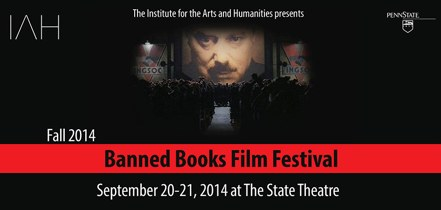
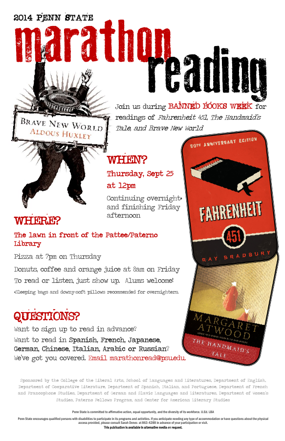
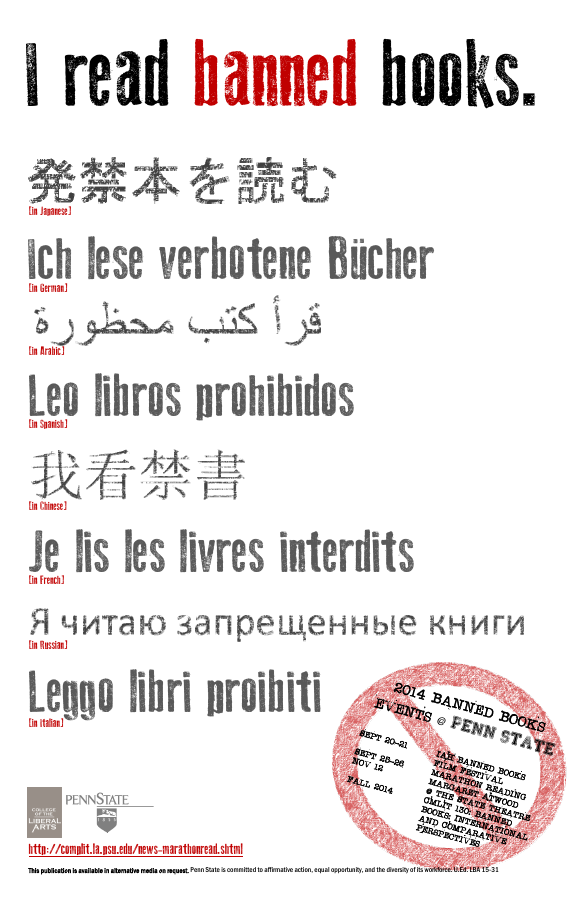

Banned Books and FIlms

BANNED BOOKS SEMESTER
This semester I’m involved in organizing a Banned Books Film Festival, participating in a Banned Books reading Marathon, and teaching a Banned Books class!
Fall 2014
Banned Books and FIlms
9/24/14
FILM FESTIVAL
What’s better than the American Library Association’s “Banned Books Week”?
A Banned Books Week that starts off with a Banned Books film festival, of course. On the weekend of September 20-21, we’ll show nine films at the State Theatre– Alexander Nevsky, To Kill A Mockingbird, Fahrenheit 451, The Kite Runner, 1984, Lolita, The Handmaid’s Tale, The Last Temptation of Christ, and One Flew Over the Cuckoo’s Nest. These films will be free and open to the public, so come see them before someone bans them!
Join us during BANNED BOOKS WEEK for readings of Fahrenheit 451, The Handmaid’s Tale, and Brave New World.
When?
Thursday, Sept 25 at 12pm
Continuing overnight* and finishing Friday afternoon
Where?
Where?
The lawn in front of the Pattee/Paterno Library
Pizza at 7pm on Thursday
Donuts, coffee and orange juice at 8am on Friday To read or listen, just show up. Alums welcome!
Questions?
Want to sign up to read in advance?
Want to read in Spanish, French, Japanese, German, Chinese, Italian, Arabic or Russian? We’ve got you covered. Email [email redacted].
Penn State is committed to affirmative action, equal opportunity, and the diversity of its workforce. U.Ed. LBA
Penn State encourages qualified persons with disabilities to participate in its programs and activities. If you anticipate needing any type of accommodation or have questions about the physical access provided, please consult Sarah Denes at 863-4288 in advance of your participation or visit.
This publication is available in alternative media on request.
*Sleeping bags and downy-soft pillows recommended for overnighters.
My Banned Books Course

